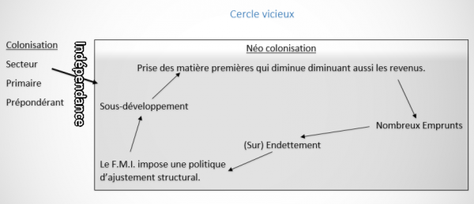
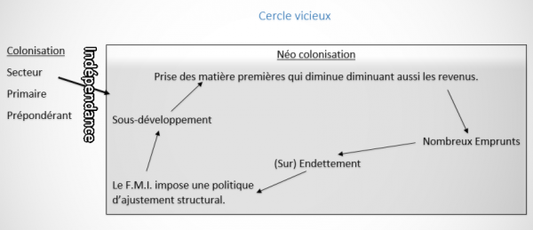
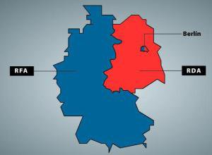
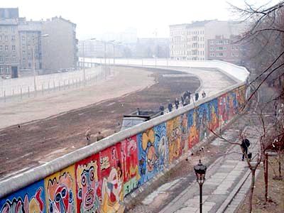
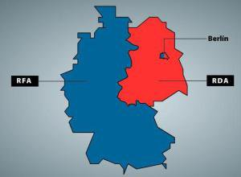
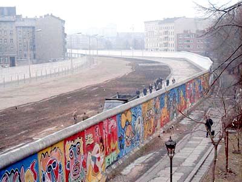
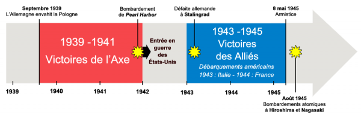

![[ANA JDG] Asterix and the Great Rescue - Megadrive](../vi/6oUXi0ckLmA/default.jpg)
![[ Présentation pour la chaîne Grenier des Joueurs ] JDG Prod](../art/SHAR.6419.583.2.jpg)


Les caractéristiques de notre système du travail qu'on a perdu lors de la révolution industrielle:
-Le travail se passe davantage hors des villes,
-+ manuel, + artisanal,
-Des maîtres, des chefs d'atelier (hiérarchie),
-Les entreprises de petites tailles,
-Les corporations (guildes) gèrent le travail, protègent le travail,
-Diversification de la production, moins de standardisation,
-L'artisan produit un objet du début à la fin,
-Les maîtres avaient dû faire une formation de ses 10-12 ans jusqu'à ces 16-18 ans où il doit présenter son chef-d'½uvre pour monter dans la hiérarchie,
-L'enseignement se faisait par imitation,
-L'artisan est intégré dans un groupe (guilde) ce qui lui permet d'innover parmi les autres membres du groupe,
-Chaque artisan est différent et est irremplaçable de par ses années de travail, son expérience le rend irréductible.
KidpaddleetcieGlin
Description :
Le Blog d'une personne aillant découvert internet en 2007 qui partage une partie de sa vie mais surtout ses réflexions, ses découvertes et ses cours!
Bon, je ne vous garantit pas que 100% du contenu est fiable mais aux moins je l'approuve! :)
N'oubliez pas de me retrouver sur les autres sites internet du réseaux KidpaddleetcieGlin retrouvable dans le premier article de chaque page. ^-^
Bon, je ne vous garantit pas que 100% du contenu est fiable mais aux moins je l'approuve! :)
N'oubliez pas de me retrouver sur les autres sites internet du réseaux KidpaddleetcieGlin retrouvable dans le premier article de chaque page. ^-^
Je bosse actuellement pour la chaîne Grenier des Joueurs
Son morceau préféré
Retour au blog de KidpaddleetcieGlin
Dans les années 50 et 60, les colonies prennent leurs indépendances mais toutes ne connaîtront pas un avenir tranquille.


Vers le 21ème Siècle
La décolonisationDepuis la fin du 15ème siècle l'Europe est devenue le foyer des principales puissances coloniales du monde. L'importance des empires à varier en fonction du temps.
L'Europe a dominé le monde en premier mais elle a été dépassée au 17ème siècle par l'Angleterre. Le Royaume-Unis est un véritable empire jusqu'au 20ème siècle.
Au 18ème siècle, la première vague de décolonisation concerne les 13 colonies anglaises qui vont se constituer les États-Unis.
La deuxième vague de décolonisation se situe au 19ème siècle et va voir immerger les pays indépendants d'Amérique du Sud.
La troisième vague de décolonisation est celle de l'Afrique en majorité mais concerne aussi l'Asie. Après les années 60, il n'y a quasis plus de colonies. La colonisation est donc finie au niveau littéral mais des liens d'influence sont conservées. Certaines sont discrets tandis que d'autres sont affichés.
Le common weath et une union de solidarité qui s'étend au niveau économique (et parfois politique) entre l'Angleterre et certaines de ses anciennes colonies. Pour les pays du common weath, ils ont l'indépendance mais ils ont comme chez le souverain d'Angleterre (chef d'état).
Les motifs d'indépendance
Dans les colonies d'Afrique, les populations indigènes subissent la ségrégation (un type de racisme ne les met pas dans un état d'esclavage mais d'infériorité et divise les deux populations dans tous les domaines). La guerre 14-18 a fait appel aux forces coloniales, ce qui a permis aux indigènes de découvrir l'Europe dans ses avantages et ses inconvénients. Ils vont découvrir une vision négative de l'Europe et vont sentir une injustice quand on les renverra dans la colonie de manière ingrate.
En 1917, Lénine installe un régime communiste en Russie et 1919, le Kominterm va diffuser les idées communistes. L'idée d'égalité plait aux colonies mais très peu d'information s'infiltrerons.
La seconde guerre mondiale va frustrer aussi les colonisés car non-seulement ils vont devoir se sacrifiés aux combats et en plus ils subissent les conséquences économiques. En effet l'effort de guerre réduit leurs salaires (à la limite du travail forcé) mais en plus les prix augmentent.
En 1948 est créé l'O.N.U. dont la charte des Nations-Unis spécifient que les hommes sont égaux et que les peuples doivent disposer d'aux-même.
La deuxième guerre froide commence avec la suprématie soviétique et la position de faiblesse des U.S.A..
La guerre du Viet-Nam explique le mauvais état des américains et la non-intervention des soviétiques ainsi que leurs influencent dans les nouveaux états décolonisés d'Afrique explique la force de l'U.R.S.S..
Les tensions entre U.S.A. et U.R.S.S. vont reprendre car à l'est de l'Europe,les vont installer des bases de lancement de missiles en 1977.L'OTAN réagit en installant des bases de missiles en Turquie.La guerre nucléaire menace et les années 80 sont marquées par de grandes manifestations pacifistes.
En 1987,la crise des missiles s'achèvent grâce à des accords de démantèlement.
En 1979,l'Afghanistan qui est à la base du coté coté soviétique va entrer en rébellion.Des attaques sont menées sur ce qui représente l'U.R.S.S.,l'Armée Rouge intervient donc rapidement.Cette guerre d'Afghanistan sera le "Viet-Nam soviétique" car les Russes vont s'épuiser au niveau matériel,financier et humain.Le résultat est catastrophique car l'Armée Rouge est réduite quasis à néant et parce que l'Afghanistan s'est fait financé sa guérilla par les américains.
En 1988,l'U.R.S.S. est plus qu'épuisé,il commence à s'écrouler.
La fin des années 80 est marquée par un adoucissement obligatoire et suicidaire de l'U.R.S.S..Le nouveau président Gorbaciov va décider de re-structurer l'économie (perestroïka) et d'adoucir le régime politique pour le rendre plus démocratique (Glasnost). Les pays de l'U.R.S.S. vont voir ce relâchement comme comme une opportunité pour sortir du communisme.Ils prennent chacun à leur tour leur indépendance et c'est ainsi que l'U.R.S.S. se décompose.
La chute du mur de Berlin se produit en 1989 et la mort de l'U.R.S.S. est remplacé par la C.E.I. (communauté des états indépendants) composé de la Russie,de la Biélorussie et de l'Ukraine.Cela montre la volonté Russe de conservé une influence sur d'autre pays et cela annonce le nouvelle impérialisme à la sauce Poutine.
La guerre du Viet-Nam explique le mauvais état des américains et la non-intervention des soviétiques ainsi que leurs influencent dans les nouveaux états décolonisés d'Afrique explique la force de l'U.R.S.S..
Les tensions entre U.S.A. et U.R.S.S. vont reprendre car à l'est de l'Europe,les vont installer des bases de lancement de missiles en 1977.L'OTAN réagit en installant des bases de missiles en Turquie.La guerre nucléaire menace et les années 80 sont marquées par de grandes manifestations pacifistes.
En 1987,la crise des missiles s'achèvent grâce à des accords de démantèlement.
En 1979,l'Afghanistan qui est à la base du coté coté soviétique va entrer en rébellion.Des attaques sont menées sur ce qui représente l'U.R.S.S.,l'Armée Rouge intervient donc rapidement.Cette guerre d'Afghanistan sera le "Viet-Nam soviétique" car les Russes vont s'épuiser au niveau matériel,financier et humain.Le résultat est catastrophique car l'Armée Rouge est réduite quasis à néant et parce que l'Afghanistan s'est fait financé sa guérilla par les américains.
En 1988,l'U.R.S.S. est plus qu'épuisé,il commence à s'écrouler.
La fin des années 80 est marquée par un adoucissement obligatoire et suicidaire de l'U.R.S.S..Le nouveau président Gorbaciov va décider de re-structurer l'économie (perestroïka) et d'adoucir le régime politique pour le rendre plus démocratique (Glasnost). Les pays de l'U.R.S.S. vont voir ce relâchement comme comme une opportunité pour sortir du communisme.Ils prennent chacun à leur tour leur indépendance et c'est ainsi que l'U.R.S.S. se décompose.
La chute du mur de Berlin se produit en 1989 et la mort de l'U.R.S.S. est remplacé par la C.E.I. (communauté des états indépendants) composé de la Russie,de la Biélorussie et de l'Ukraine.Cela montre la volonté Russe de conservé une influence sur d'autre pays et cela annonce le nouvelle impérialisme à la sauce Poutine.
La seconde guerre mondiale se termine déjà dans un climat de tension entre les Alliés soviétiques et américains.Ils anticipent déjà le monde d'après guerre où ils se livreront à une concurrence féroce.Dès que les nazis sont vaincus,les soviétiques et les américains ont du mal à se mettre d'accord sur certains sujets,la situation s'envenime et on débouche sur des situation inextricables!
L'Europe est à peine sortie de la seconde guerre mondiale qu'elle devient l'enjeu de nouvelle rivalité.La partie occidental libérée par les U.S.A. se voit proposer le plan Marshall.Ce projet consiste d'une part à financé la reconstruction de l'Europe mais aussi à restaurer un client des U.S.A. ainsi que conservé un allié politique.L'union soviétique réagit et re-forme le Komintern sous le nom de "Kominform". En 1948,l'O.E.C.E. est créé pour renforcer la coopération entre européens du coté démocratique.Les soviétiques vont quant à eux se servir du Parti Communiste Tchèque pour faire un coup d'état à Prague et ainsi s'approprier toute la République Tchèque.
En 1948 aussi,les soviétique passe à l'action en Allemagne en faisant le blocus de Berlin.Les secteurs occidentaux de la ville sont coupés de tout approvisionnement et c'est grâce à un pont aérien qu'ils résistent.Au bout d'un an les soviétiques abandonnent leurs prétentions sur l'Allemagne mais vont conserver leurs parties et la sauvegarder en lui donnant le nom de R.D.A. (République Démocratique d'Allemagne).Les occidentaux font pareille et créèrent la R.F.A. (République Fédérale d'Allemagne).La Chine passe elle aussi définitivement du coté soviétique avec Mao sous l'appellation R.P.C. (République Populaire de Chine).

Vu la menace militaire des soviétiques, les européens occidentaux et les U.S.A. créés l'O.T.A.N. (Alliance Militaire).
La Corée qui était occupé par le Japon depuis des décennies a été libéré par les soviétiques au Nord et au Sud par les occidentaux.Là aussi aucun accord n'a été trouvé et,en 1950,les soviétiques passent à l'attaque. L'O.T.A.N. intervient et sauve in extremis les Coréens du Sud. Ils vont quasis récupéré la totalité du pays mais l'aide Chinoise et soviétique vont rétablir la situation d'avant guerre.En 1953,deux états sont créés: Corée du Nord et Corée du Sud.
En 1953, Staline meurt et laisse présagé une période de détente au niveau des relations internationales. D'ailleurs,l'union soviétique s'adoucit légèrement et entame même une période de déstalinisation.En 1956,le régime montre qu'il garde une mise sur ses possessions en réprimant l'insurrection de l'Hongrie.
En 1955,les républiques de l'Union Soviétique et ses alliés vont se regrouper au sein du "Pacte de Varsovie" (Alliance Militaire).
Entre 1956 et 1960,on assiste à une période de détente au niveau des relations internationales qui prendra le nom de "Co-existence pacifique".Elle est marqué par la suppression du Kominform et par le voyage du président de l'U.R.S.S. aux États-Unis.En 1961,les soviétiques achèvent la construction du mur de Berlin qui devient totalement infranchissable.

En 1962,la crise de Cuba menace de faire éclater un conflit mondiale.L'île vient d'être conquise par Che Guevara et Fidel Castro qui y ont installé un régime communiste.Évidemment,Moscou va en profiter pour obtenir un allié stratégique qui menacera très dangereusement les U.S.A.. Kennedy choisit de intervenir militairement en envoyant des forces spéciales dans la Baie Des Cochons en espérant détruire les installations des rampes de lancement de missile avant que les soviétiques n'apportent les ogives.L'opération échoue et seule l'embargo autour de l'île empêchera les soviétiques d'apporter les armes nucléaires.Le convois soviétique est obligé de faire demi-tour.Les U.S.A. et les soviétiques vont à nouveau connaître une période de détente marqué par l'installation du téléphone rouge entre Kremlin et la Maison Blanche,des traités de non-prolifération nucléaire et des rencontres entre les rivaux.
Cependant,en 1963,la Chine se dissocie de l'U.R.S.S. et va essayer de soutenir le nord du Viêt Nam. En 1964 et 1975,la guerre du Viêt Nam s'envenime sans pour autant altérer les relations U.S.A.-U.R.S.S.. La guerre du Viêt Nam commence d'abord avec des acteurs internes mais le Sud va faire appel aux U.S.A. et ceci après avoir envoyer des aides financières et matérielles ainsi que des conseillers militaires vont envoyer plusieurs troupes.Les U.S.A. vont se ruiner dans cette guerre et subir le choc pétrolier des années 70.
La première guerre froide se termine donc en 1975 par la pré-dominance soviétique et l'affaiblissement des U.S.A..En 1968,dans la vague de libération des m½urs, la République Tchèque va tenter d'adoucir son régime communiste (le Printemps de Prague) mais ce mouvement sera écrasé par l'armée Rouge.
L'Europe est à peine sortie de la seconde guerre mondiale qu'elle devient l'enjeu de nouvelle rivalité.La partie occidental libérée par les U.S.A. se voit proposer le plan Marshall.Ce projet consiste d'une part à financé la reconstruction de l'Europe mais aussi à restaurer un client des U.S.A. ainsi que conservé un allié politique.L'union soviétique réagit et re-forme le Komintern sous le nom de "Kominform". En 1948,l'O.E.C.E. est créé pour renforcer la coopération entre européens du coté démocratique.Les soviétiques vont quant à eux se servir du Parti Communiste Tchèque pour faire un coup d'état à Prague et ainsi s'approprier toute la République Tchèque.
En 1948 aussi,les soviétique passe à l'action en Allemagne en faisant le blocus de Berlin.Les secteurs occidentaux de la ville sont coupés de tout approvisionnement et c'est grâce à un pont aérien qu'ils résistent.Au bout d'un an les soviétiques abandonnent leurs prétentions sur l'Allemagne mais vont conserver leurs parties et la sauvegarder en lui donnant le nom de R.D.A. (République Démocratique d'Allemagne).Les occidentaux font pareille et créèrent la R.F.A. (République Fédérale d'Allemagne).La Chine passe elle aussi définitivement du coté soviétique avec Mao sous l'appellation R.P.C. (République Populaire de Chine).

Vu la menace militaire des soviétiques, les européens occidentaux et les U.S.A. créés l'O.T.A.N. (Alliance Militaire).
La Corée qui était occupé par le Japon depuis des décennies a été libéré par les soviétiques au Nord et au Sud par les occidentaux.Là aussi aucun accord n'a été trouvé et,en 1950,les soviétiques passent à l'attaque. L'O.T.A.N. intervient et sauve in extremis les Coréens du Sud. Ils vont quasis récupéré la totalité du pays mais l'aide Chinoise et soviétique vont rétablir la situation d'avant guerre.En 1953,deux états sont créés: Corée du Nord et Corée du Sud.
En 1953, Staline meurt et laisse présagé une période de détente au niveau des relations internationales. D'ailleurs,l'union soviétique s'adoucit légèrement et entame même une période de déstalinisation.En 1956,le régime montre qu'il garde une mise sur ses possessions en réprimant l'insurrection de l'Hongrie.
En 1955,les républiques de l'Union Soviétique et ses alliés vont se regrouper au sein du "Pacte de Varsovie" (Alliance Militaire).
Entre 1956 et 1960,on assiste à une période de détente au niveau des relations internationales qui prendra le nom de "Co-existence pacifique".Elle est marqué par la suppression du Kominform et par le voyage du président de l'U.R.S.S. aux États-Unis.En 1961,les soviétiques achèvent la construction du mur de Berlin qui devient totalement infranchissable.

En 1962,la crise de Cuba menace de faire éclater un conflit mondiale.L'île vient d'être conquise par Che Guevara et Fidel Castro qui y ont installé un régime communiste.Évidemment,Moscou va en profiter pour obtenir un allié stratégique qui menacera très dangereusement les U.S.A.. Kennedy choisit de intervenir militairement en envoyant des forces spéciales dans la Baie Des Cochons en espérant détruire les installations des rampes de lancement de missile avant que les soviétiques n'apportent les ogives.L'opération échoue et seule l'embargo autour de l'île empêchera les soviétiques d'apporter les armes nucléaires.Le convois soviétique est obligé de faire demi-tour.Les U.S.A. et les soviétiques vont à nouveau connaître une période de détente marqué par l'installation du téléphone rouge entre Kremlin et la Maison Blanche,des traités de non-prolifération nucléaire et des rencontres entre les rivaux.
Cependant,en 1963,la Chine se dissocie de l'U.R.S.S. et va essayer de soutenir le nord du Viêt Nam. En 1964 et 1975,la guerre du Viêt Nam s'envenime sans pour autant altérer les relations U.S.A.-U.R.S.S.. La guerre du Viêt Nam commence d'abord avec des acteurs internes mais le Sud va faire appel aux U.S.A. et ceci après avoir envoyer des aides financières et matérielles ainsi que des conseillers militaires vont envoyer plusieurs troupes.Les U.S.A. vont se ruiner dans cette guerre et subir le choc pétrolier des années 70.
La première guerre froide se termine donc en 1975 par la pré-dominance soviétique et l'affaiblissement des U.S.A..En 1968,dans la vague de libération des m½urs, la République Tchèque va tenter d'adoucir son régime communiste (le Printemps de Prague) mais ce mouvement sera écrasé par l'armée Rouge.
L'occupation allemande commence le jour de l'invasion (10 mai 1940) et se termine entre 44 et 45,le temps que le pays soit totalement libéré après la contre-attaque allemande.Les civils belges se souviennent de l'occupation de 14-18 et s'enfuient en France.Ces dizaines de millier de gens vont bloquer les routes aux troupes françaises et anglaises qui sont censées stopper l'avancée des allemands.Cette période s'appelle "l'exode" et se termine lorsque la France s'avoue vaincue (22 juin).Les belges retrouvent chez eux et vont vivre quatre années d'occupations allemands.Les soldats belges fais prisonniers iront quant à eux en Allemagne et seront répartit dans des endroit où manque la main d'oeuvre.
La main d'oeuvre allemande est si insuffisante que les nazis vont proposer des place dans leurs usines aux belges.Rare sont les civils qui accepte.Les nazis imposent donc le S.T.O. (Service de Travail Obligatoire).Les belges qualifiés sont les plus recherchés,certains d'entre eux essayeront de se cacher.Certaines personnes seront persécuter par la police secrète d'État (Gestapo): Les communistes,les socialistes,les homosexuelles,les Tziganes,les handicapés et les juifs.
Les plus dangereux selon les allemands sont les résistants mais la résistance évolue avec le conflit.Lorsque l'Axe domine et vient de conquérir un pays,les résistants sont de peu nombreux.Les résistants communistes ne peuvent rien tenter avant que le pacte de non-agression-germano-soviétique ne soit annulé.Au fur et à mesure que l'Axe perdra du terrain,les rangs de la résistance grossiront.La collaboration évoluera inversement et sera l'appui à partir duquel les nazis pourront pleinement maîtriser la situation.Le parti REX et la VNV fourniront même des hommes aux allemands (Légion Wallonne et légion Langemarck).
Tout civil peut-être soumis aux réquisitions allemandes et doit suivre le rationnement en ce qui concerne le commerce.Le salaire était verser en ticket mais le rationnement au cours de la guerre est rapidement tombé en-dessous du minimum vital.Cela a forcé la création d'un "marché noire" où n'importe qui ferait du commerce clandestinement.Les denrées les moins nécessaires étaient les plus cher.Les personnes qui vont osées cachés les cibles du régimes auront la vie difficile et seront appelé "Juste après la guerre".
Un sujet va diviser la Belgique en deux à la fin de la guerre,c'est la "question royale".Le Roi Léopold III a désobéit au parlement en 1940 car il a refusé de les accompagné à Londres pour vivre la guerre avec ses soldats.Les allemands l'enferment dans une prison dorée et lorsque la Belgique est libérée,la question est posé: "Voulez-vous le retour du Roi ?".
Les Flamands répondront majoritairement "oui" et la Wallonie a répondu majoritairement "non".
La consultation populaire amènera un "oui" légèrement majoritaire mais les grèves et les émeutes du parti socialiste vont empêcher que Léopold III revienne.Le compromis a été de faire passer Baudouin Ier avant la mort de son père.
La main d'oeuvre allemande est si insuffisante que les nazis vont proposer des place dans leurs usines aux belges.Rare sont les civils qui accepte.Les nazis imposent donc le S.T.O. (Service de Travail Obligatoire).Les belges qualifiés sont les plus recherchés,certains d'entre eux essayeront de se cacher.Certaines personnes seront persécuter par la police secrète d'État (Gestapo): Les communistes,les socialistes,les homosexuelles,les Tziganes,les handicapés et les juifs.
Les plus dangereux selon les allemands sont les résistants mais la résistance évolue avec le conflit.Lorsque l'Axe domine et vient de conquérir un pays,les résistants sont de peu nombreux.Les résistants communistes ne peuvent rien tenter avant que le pacte de non-agression-germano-soviétique ne soit annulé.Au fur et à mesure que l'Axe perdra du terrain,les rangs de la résistance grossiront.La collaboration évoluera inversement et sera l'appui à partir duquel les nazis pourront pleinement maîtriser la situation.Le parti REX et la VNV fourniront même des hommes aux allemands (Légion Wallonne et légion Langemarck).
Tout civil peut-être soumis aux réquisitions allemandes et doit suivre le rationnement en ce qui concerne le commerce.Le salaire était verser en ticket mais le rationnement au cours de la guerre est rapidement tombé en-dessous du minimum vital.Cela a forcé la création d'un "marché noire" où n'importe qui ferait du commerce clandestinement.Les denrées les moins nécessaires étaient les plus cher.Les personnes qui vont osées cachés les cibles du régimes auront la vie difficile et seront appelé "Juste après la guerre".
Un sujet va diviser la Belgique en deux à la fin de la guerre,c'est la "question royale".Le Roi Léopold III a désobéit au parlement en 1940 car il a refusé de les accompagné à Londres pour vivre la guerre avec ses soldats.Les allemands l'enferment dans une prison dorée et lorsque la Belgique est libérée,la question est posé: "Voulez-vous le retour du Roi ?".
Les Flamands répondront majoritairement "oui" et la Wallonie a répondu majoritairement "non".
La consultation populaire amènera un "oui" légèrement majoritaire mais les grèves et les émeutes du parti socialiste vont empêcher que Léopold III revienne.Le compromis a été de faire passer Baudouin Ier avant la mort de son père.
1)Savoir qui sont les acteurs principaux:
Toute personne morale ou physique qui agit au cours du conflit.Elle peut prendre différentes composantes.
Précisons que une personne morale est un groupe de personne,un collectif, tandis qu'une personne physique est une personne biologique.
2)Acteurs secondaires
Toute personne morale ou physique qui intervient dans le conflit VIA le soutient qu'elle procure à un acteur principale.L'acteur secondaire peut être neutre.Il peut comprendre des composantes.
3)Les enjeux
Objectifs poursuivis à travers le conflit par chacun des acteurs.
4)Les moyens utilisés
Techniques ou matérielles mis en oeuvre par chaque acteur en fonction de ses enjeux.
5)Paramètre historique
Événement antérieur au conflit qui a un impacte sur lui.Le déroulement du conflit ne nous intéresse pas.
6)Paramètre géographique
Spécificités du territoire qui ont un impacte sur le conflit.
7)Catalyseur
Date de départ du conflit.Qui fait quoi,où?
8)La résolution
Date(s) de fin du conflit.Qui fait quoi,où?

Le premier septembre 1939,Hitler attaque par surprise la Pologne et réussit à conquérir les 3/4 du pays.Conformément à son pacte avec Staline,l'URSS prend 1/4 de la Pologne avec trois états Baltes.La France et l'Angleterre réagissent enfin en déclarant la guerre à l'Allemagne.Cependant,elles n'attaquent pas et se contentent de menacer l'Allemagne.
En avril 1940,pour sécurisé son approvisionnement en fer suédois et pour contrôler la mer Baltique,Hitler conquiert le Danemark et la Norvège.
En mai 1940,Hitler met fin à la "drôle de guerre" (période où la guerre est déclarée mais sans combat) en envahissant la Belgique,les Pays-Bas et la France en un mois et demi,la campagne est achevée et la France perd sa réputation de puissance. Le maréchal Pétain va prendre le pouvoir sur le nord de la France et sera un collaborateur d'Hitler.Les côtes Atlantiques sont gérées par l'Allemagne.Le générale DeGaule va ,quant à lui,faire un appel le 18 juin 1940 à la résistance.
En août 1940,Hitler décide de faire plier l'Angleterre (les militaires et les civils) en attaquant dans les airs (batailles aériennes et bombardements).La bataille d'Angleterre se termine en octobre sur une défaite Allemande,l'armée de l'air s'est épuisée face aux anglais.
En septembre 1940,Mussolini tente de envahir l'Égypte depuis sa colonie Libyenne mais les anglais se défendent,le repousse et vont même jusqu'à menacer la position de l'Axe en Afrique du Nord.Hitler est obligé de l'aidé et envoi ses propres forces récupéré la situation (il envoi l'Afrikakops).
Au printemps 1941,Mussolini tente de envahir la Grèce à partir de l'Albanie,seulement les grecques le repoussent et menacent la position de l'Axe dans les Balkans.Hitler est obligé d'intervenir en envoyant des forces et en profite pour prendre tout les Balkans.
En juin 1941,Hitler manque de ressource et avance la date de conquête de l'URSS.Il lance l'opération "Barbarossa" et arrive à encercler Leningrad,Moscou et Stalingrad.L'Axe contrôle donc l'Europe,l'Afrique du Nord,la méditerrané et l'Atlantique grâce aux
sous-marins allemands.
En septembre 1941,le Japon conquiert une bonne partie de l'Asie du sud-est sans encore touché aux colonies occidentales.Les USA et l'UK ressentent la menacent et décident d'instaurer un embargo sur le Japon.Le pays est alors en mauvaise posture car il dépend du commerce international au niveau industriel.
Le 7 décembre 1941,le Japon attaque par surprise la base militaire américaine de Pearl Harbor dans l'archipel d'Hawaï,il s'assure ainsi il la sécurité d'action pour envahir les colonies occidentales.Le Japon en profite pour rejoindre l'Axe Rome-Berlin-Tokyo.
En 1942,les américains stoppent l'expansion nippone à la bataille de Midway.Les britanniques,de leurs coté,gagnent la bataille d'El Alamein et s'assure le contrôle de l'Afrique du Nord.Cela permet un débarquement Américain en Afrique puis en Sicile en juillet 1943.
En février 1943,les soviétiques remportent la bataille de Stalingrad ce qui leurs permettent de faire reculer les Allemands.
Le 6 juin 1944,les USA,l'UK et les canadiens débarquent en Normandie et mettent six mois à assurer une position de conquête.C'est à partir de là que commence la libération de l'Europe accéléré.Bruxelles est libéré en septembre 1944.
Lors de l'hiver 1944-1945,Hitler tente une dernière contre-attaque dans les Ardennes Belges mais échoue et la lente conquête de l'Allemagne commence.La progression la plus rapide est celle des soviétiques.
Le 8 mai 1945,les forces Allemandes se rendent et la seconde guerre mondiale est terminée en Europe.
Dans le pacifique,les Japonais fanatiques se battent pour chaque mètres carrés et les USA ne sont pas encore sur le sol japonais.Ils craignent d'épuisé trop d'homme et de moyens pour finir la guerre.Les USA larguent deux bombes atomiques,l'une sur Nagasaki et l'autre sur Hiroshima en début Août 1945.
Le 2 septembre 1945,l'Empereur Japonais signe l'armistice et c'est la fin de la seconde guerre mondiale.
------------------------------------------------------------------------------------------------------------------------------------------------------
Pour plus d'information sur:
Hitler: https://fr.wikipedia.org/wiki/Adolf_Hitler
Mussolini: https://fr.wikipedia.org/wiki/Benito_Mussolini
le Maréchal Pétain: https://fr.wikipedia.org/wiki/Philippe_P%C3%A9tain
Pays impliqués dans la Seconde Guerre mondiale:
https://fr.wikipedia.org/wiki/Pays_impliqu%C3%A9s_dans_la_Seconde_Guerre_mondiale
PLUS: https://www.lesbonsprofs.com/notion/histoire-geographie-3e/guerres-mondiales-et-regimes-totalitaires-1914-1945/la-seconde-guerre-mondiale-la-fiche-de-revision
Le premier septembre 1939,Hitler attaque par surprise la Pologne et réussit à conquérir les 3/4 du pays.Conformément à son pacte avec Staline,l'URSS prend 1/4 de la Pologne avec trois états Baltes.La France et l'Angleterre réagissent enfin en déclarant la guerre à l'Allemagne.Cependant,elles n'attaquent pas et se contentent de menacer l'Allemagne.
En avril 1940,pour sécurisé son approvisionnement en fer suédois et pour contrôler la mer Baltique,Hitler conquiert le Danemark et la Norvège.
En mai 1940,Hitler met fin à la "drôle de guerre" (période où la guerre est déclarée mais sans combat) en envahissant la Belgique,les Pays-Bas et la France en un mois et demi,la campagne est achevée et la France perd sa réputation de puissance. Le maréchal Pétain va prendre le pouvoir sur le nord de la France et sera un collaborateur d'Hitler.Les côtes Atlantiques sont gérées par l'Allemagne.Le générale DeGaule va ,quant à lui,faire un appel le 18 juin 1940 à la résistance.
En août 1940,Hitler décide de faire plier l'Angleterre (les militaires et les civils) en attaquant dans les airs (batailles aériennes et bombardements).La bataille d'Angleterre se termine en octobre sur une défaite Allemande,l'armée de l'air s'est épuisée face aux anglais.
En septembre 1940,Mussolini tente de envahir l'Égypte depuis sa colonie Libyenne mais les anglais se défendent,le repousse et vont même jusqu'à menacer la position de l'Axe en Afrique du Nord.Hitler est obligé de l'aidé et envoi ses propres forces récupéré la situation (il envoi l'Afrikakops).
Au printemps 1941,Mussolini tente de envahir la Grèce à partir de l'Albanie,seulement les grecques le repoussent et menacent la position de l'Axe dans les Balkans.Hitler est obligé d'intervenir en envoyant des forces et en profite pour prendre tout les Balkans.
En juin 1941,Hitler manque de ressource et avance la date de conquête de l'URSS.Il lance l'opération "Barbarossa" et arrive à encercler Leningrad,Moscou et Stalingrad.L'Axe contrôle donc l'Europe,l'Afrique du Nord,la méditerrané et l'Atlantique grâce aux
sous-marins allemands.
En septembre 1941,le Japon conquiert une bonne partie de l'Asie du sud-est sans encore touché aux colonies occidentales.Les USA et l'UK ressentent la menacent et décident d'instaurer un embargo sur le Japon.Le pays est alors en mauvaise posture car il dépend du commerce international au niveau industriel.
Le 7 décembre 1941,le Japon attaque par surprise la base militaire américaine de Pearl Harbor dans l'archipel d'Hawaï,il s'assure ainsi il la sécurité d'action pour envahir les colonies occidentales.Le Japon en profite pour rejoindre l'Axe Rome-Berlin-Tokyo.
En 1942,les américains stoppent l'expansion nippone à la bataille de Midway.Les britanniques,de leurs coté,gagnent la bataille d'El Alamein et s'assure le contrôle de l'Afrique du Nord.Cela permet un débarquement Américain en Afrique puis en Sicile en juillet 1943.
En février 1943,les soviétiques remportent la bataille de Stalingrad ce qui leurs permettent de faire reculer les Allemands.
Le 6 juin 1944,les USA,l'UK et les canadiens débarquent en Normandie et mettent six mois à assurer une position de conquête.C'est à partir de là que commence la libération de l'Europe accéléré.Bruxelles est libéré en septembre 1944.
Lors de l'hiver 1944-1945,Hitler tente une dernière contre-attaque dans les Ardennes Belges mais échoue et la lente conquête de l'Allemagne commence.La progression la plus rapide est celle des soviétiques.
Le 8 mai 1945,les forces Allemandes se rendent et la seconde guerre mondiale est terminée en Europe.
Dans le pacifique,les Japonais fanatiques se battent pour chaque mètres carrés et les USA ne sont pas encore sur le sol japonais.Ils craignent d'épuisé trop d'homme et de moyens pour finir la guerre.Les USA larguent deux bombes atomiques,l'une sur Nagasaki et l'autre sur Hiroshima en début Août 1945.
Le 2 septembre 1945,l'Empereur Japonais signe l'armistice et c'est la fin de la seconde guerre mondiale.
------------------------------------------------------------------------------------------------------------------------------------------------------
Pour plus d'information sur:
Hitler: https://fr.wikipedia.org/wiki/Adolf_Hitler
Mussolini: https://fr.wikipedia.org/wiki/Benito_Mussolini
le Maréchal Pétain: https://fr.wikipedia.org/wiki/Philippe_P%C3%A9tain
Pays impliqués dans la Seconde Guerre mondiale:
https://fr.wikipedia.org/wiki/Pays_impliqu%C3%A9s_dans_la_Seconde_Guerre_mondiale
PLUS: https://www.lesbonsprofs.com/notion/histoire-geographie-3e/guerres-mondiales-et-regimes-totalitaires-1914-1945/la-seconde-guerre-mondiale-la-fiche-de-revision
Vous pouvez retrouvez une version de résolution supérieure (pour pouvoir zoomer) sur mon DeviantArt:
kidpaddleetcie.deviantart.com

kidpaddleetcie.deviantart.com
Partage